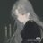

北雁冬翼（simone luxem）🏳️⚧️🏳️🌈🔬
@Simone_Luxem
@yaming00742313 抱抱抱抱你…
以及…可不可以不要理清蒸…记得好早以前在anakia群里的时候说过的…
北雁冬翼（simone luxem）🏳️⚧️🏳️🌈🔬
@Simone_Luxem
另附封锁策略：
对清蒸的任何消息，不参与，不传播，不看，不让它具有任何影响力；同时自己也做到对其任何内容都不采取任何态度，即不因其任何内容而相信或不相信某事，不因其任何内容而对任何人或事的任何看法产生任何改变
https://t.co/P7vRr5xD5N

yaming和牧鸢（为生民立命）🙂
@yaming00742313
突然想起来圣博看门大爷五六岁的孙子天天在圣博里待着，我刚刚去到那的时候他还过来告诉我说我站错队了该罚，要拉我去女生队🥴… https://t.co/INYEnXGXOi